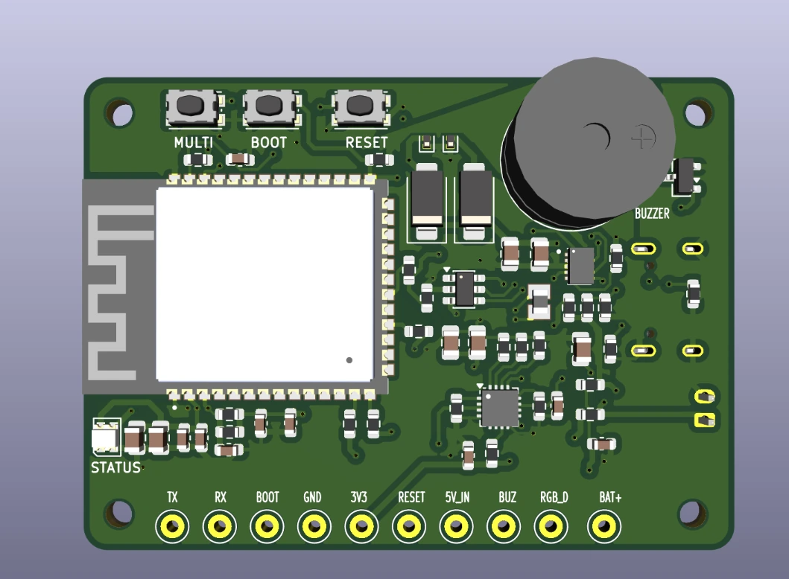
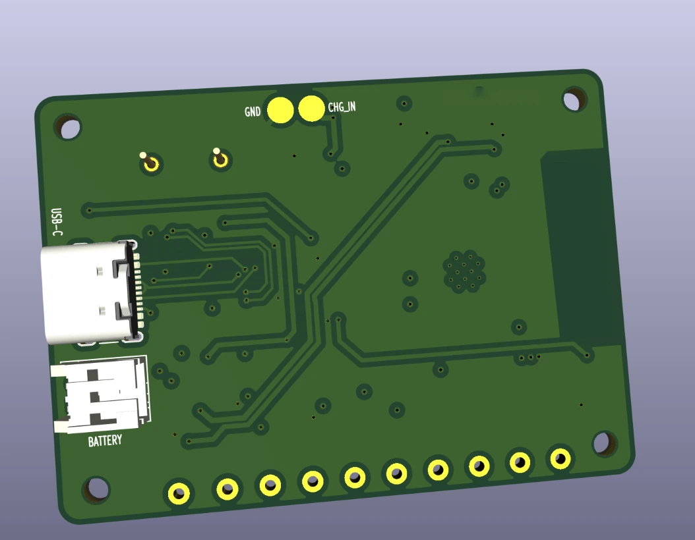
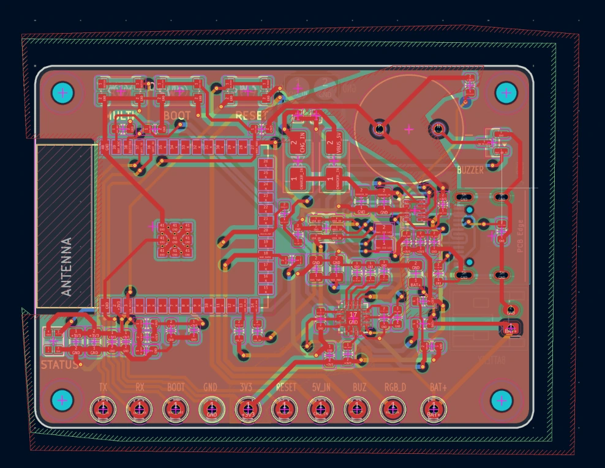
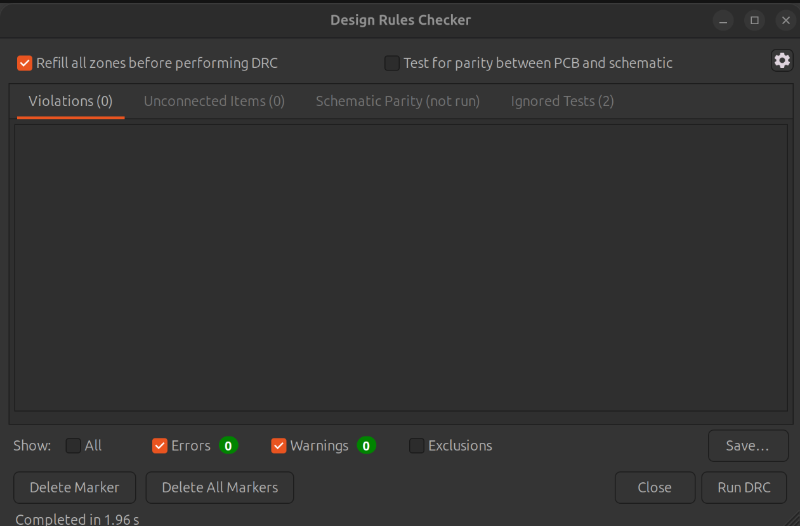
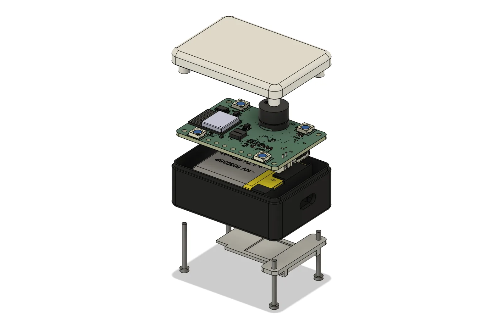
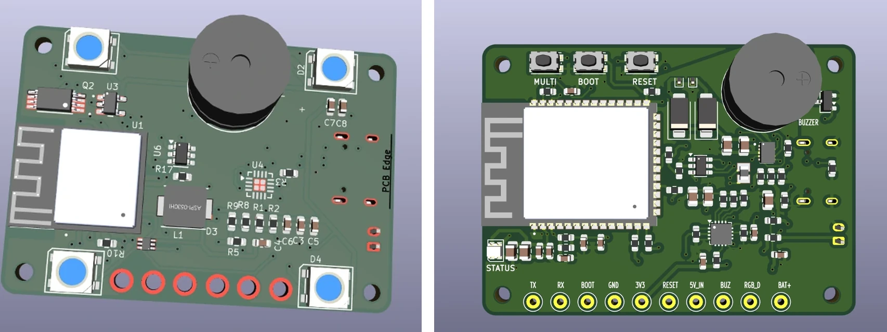
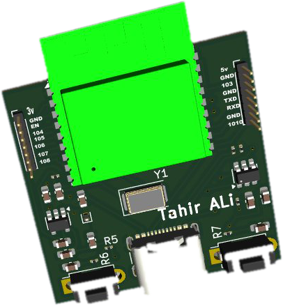
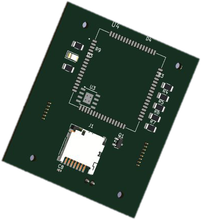
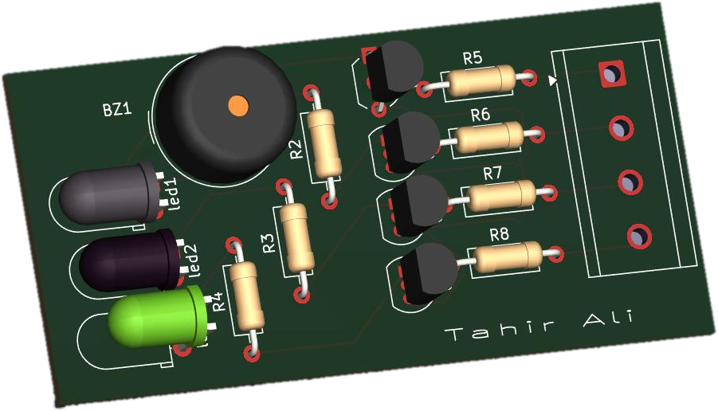
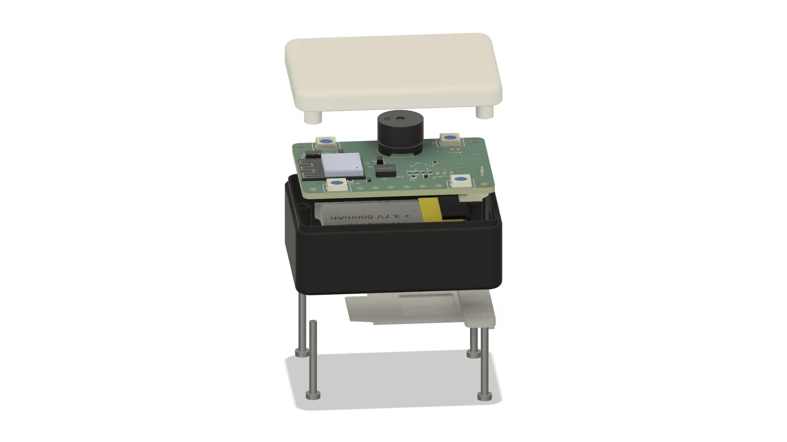

Reviewed at every stage
Schematic, placement and delivery each go to you for review before the next step begins.
I turn your requirements, an existing schematic or an early concept into an organized PCB design and manufacturing-ready files, in KiCad or Altium. Latest work: a two-device ESP32 parcel-tracking system, both PCBs and the Beacon enclosure.

Schematic, placement and delivery each go to you for review before the next step begins.
ERC and DRC are run and shown to you, with the results on the case studies.
KiCad project, Gerbers, drill files, BOM, CPL and STEP, organized in one folder.
I design the 3D-printable enclosure around your finished PCB and battery.
A client's two-device ESP32 system, taken from specification to manufacturing files: two 4-layer PCBs and the Beacon enclosure. Switch views to inspect it.



ESP32-C3 module, four RGB LEDs under the diffuser, a passive buzzer and programming pads.
PCB · ESP32-C3 · 4-Layer
LiPo power path, switchable 5 V rail for four RGB LEDs, passive buzzer, USB-C and dock contacts.
View Case Study →PCB · ESP32-S3 · BLE + ESP-NOW
BLE-to-ESP-NOW bridge with LiPo charging, USB-C, dock contacts, three buttons and a status LED.
View Case Study →
Enclosure · Fusion 360 · 3D Printing
Five printable parts with a diffuser lid, a replaceable parcel clip and dock contacts.
View Case Study →Tahir did an excellent job on my PCB project. He was very responsive, professional, and willing to make every requested adjustment until the final package was complete. I especially appreciated his attention to detail, clear communication, technical understanding, and the complete documentation of the project files.
He also responded quickly whenever I had questions or requested changes. The final delivery was well organized and included the full KiCad project, manufacturing files, BOM, CPL, Gerber files, drill files, STEP model, and the required documentation. I am very satisfied with the result and would be happy to work with him again on the next phase of the project.
Per this client's review, the final delivery included:
Twelve projects, each with its own case study. The first four are the strongest examples; filter to find work like yours.
Showing all 12 projects

Full product · 2 PCBs + enclosure
Two ESP32 boards and a printable enclosure, from the client specification to manufacturing files.
View Engineering Case Study →
8-Layer · RF Layout · STM32H7
8-layer layout with five RF sections, ten SMA feeds and 400+ components, from a client schematic.
View Engineering Case Study →
Reverse Engineering · Diagnostics
Rebuilt the schematic of an undocumented STM32 board from PCB and BOM, then diagnosed four field issues.
View Engineering Case Study →
CAN Bus Node · ESP32-S3 · 30 × 50 mm
About 80 components in a 30 × 50 mm footprint: ESP32-S3, USB-C, CAN transceiver and microSD.
View Engineering Case Study →PCB · ESP32-C3 · 4-Layer
LiPo power path, switchable 5 V rail for four RGB LEDs, passive buzzer, USB-C and dock contacts.
View Engineering Case Study →PCB · ESP32-S3 · BLE + ESP-NOW
BLE-to-ESP-NOW bridge with LiPo charging, USB-C, dock contacts, three buttons and a status LED.
View Engineering Case Study →Enclosure · Fusion 360 · 3D Printing
Five printable parts with a diffuser lid, a replaceable parcel clip and dock contacts.
View Engineering Case Study →
ESP32 Dev Board · 2-Layer · USB-C
2-layer ESP32 board with USB-C, ESD protection, a 3.3 V LDO and full GPIO breakout.
View Engineering Case Study →
STM32 · GPS · SD Card Logging
Multi-layer STM32 tracker with a GPS antenna keep-out and microSD logging.
View Engineering Case Study →
USB Interface · CP2102 · USB-C
Compact CP2102 bridge with USB-C, ESD-protected data lines and TX/RX status LEDs.
View Engineering Case Study →
Power Electronics · LM2596 · 12 V to 5 V
Buck converter board with copper pour sized for power delivery and a trimmer-adjustable output.
View Engineering Case Study →
Sensor & Alert Board · KiCad + Altium
2-layer board with four BC547 level stages, LEDs and a buzzer, verified in both KiCad and Altium.
View Engineering Case Study →Start with the problem you have. Each service lists what to send, what you get back and where I have done it before.
For clients with a schematic or an early concept who need it turned into a laid-out board.
For a finished schematic that needs placement, layer planning and routing.
For dense boards with several radios, antennas or high-pin-count MCUs.
For battery-powered boards that need charging, regulation and input protection.
For an existing board you need rebuilt, investigated, corrected or made smaller.
For boards that are ready to go to a fab.
For products that need a 3D-printable housing built around the PCB and battery.
Each step is tied to something I did on a real project. The exact workflow depends on the project, and larger projects can be organized into milestones you review one at a time.
Understand board requirements, dimensions, interfaces, components and manufacturing constraints.
In practiceARC62: the client supplied their KiCad layout, a BOM and their own notes on four field symptoms.
Review connectivity, components and design requirements before layout.
In practiceARC62 had no schematic, so it was rebuilt net by net from the PCB and BOM before any diagnosis. Beacon and Gateway: both schematics were reviewed with the client before layout started.
Plan placement, layers, routing, power and grounding.
In practiceGateway: five RF sections were floor-planned on 8 layers, each with its own antenna feed to a board-edge SMA.
Run design checks and review the board before manufacturing.
In practiceGateway: KiCad DRC run before hand-off, with no violations reported. Beacon and Gateway: ERC and DRC clean before each hand-off.
Prepare the required manufacturing files and documentation.
In practiceGerbers, BOM and fabrication files prepared for JLCPCB, PCBWay or OSHPark.
Deliver organized project files and documentation.
In practiceA client described the package as well organized: KiCad project, manufacturing files, BOM, CPL, Gerber, drill, STEP and documentation. Beacon enclosure: STL and STEP per part, drawings, BOM and an assembly animation. Beacon PCB: the client audited the package against a checklist and every point was closed.
Screenshots, renders and photos from the projects above.



I work with clients through freelance platforms to take PCB projects from requirements and existing designs through layout, verification and manufacturing-ready output.
I'm a PCB design engineer working with clients remotely from Pakistan. I also study Electrical Engineering at Namal University, Mianwali (BSc, 2023 to 2027), which is where I started designing boards.
Most of my work is in KiCad and Altium Designer, and I'll stay in your toolchain when your project already lives in one.
A schematic or a clear description of what the board does, the board size and key interfaces, and any manufacturing constraints. A rough idea is enough to start a conversation.
Yes. Most of my work is in KiCad and Altium Designer, with EasyEDA Pro as well, and I stay in your toolchain when the project already lives there.
Typically the project files, Gerbers, drill files, BOM, CPL and a STEP model, plus documentation. A client described a delivery like this in their review above.
Yes. The Beacon project is a 3D-printable enclosure designed around a finished PCB and battery, delivered with STL, STEP, drawings and an assembly animation.
Yes. On a two-device parcel-tracking system I took both boards from specification to manufacturing files and designed the Beacon enclosure, working in milestones, each reviewed with the client before the next began. Read the case study.
I split larger projects into phases. Each phase is delivered and reviewed by you before the next one begins. The parcel-tracking system was run this way, with the schematic reviewed before layout and the placement reviewed before routing.
Through Fiverr or Upwork, or send the form below and I'll reply with the next step. Both platforms are linked in this page.
Order through Fiverr or Upwork, or send a brief with the form below.
A schematic, your requirements, existing PCB files or a rough idea. Board size, interfaces and key components help.
I come back with questions, the scope and the next step, usually within a day.
Larger projects are split into phases. You review each delivery before the next phase begins.
Send the schematic, requirements, existing PCB files, or even a rough idea. I'll review the project and discuss the next step.
“He was very responsive, professional, and willing to make every requested adjustment until the final package was complete.”